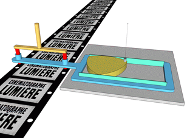
Mécanisme du cinématographe des frères Lumière.gif
Study the cycle of intermittent film advance and dwell.
Starcheuch et Bernard de Go Mars · CC BY-SA 3.0Source and files
Source record · Original file, unmodified.
intermittent-motion.gif
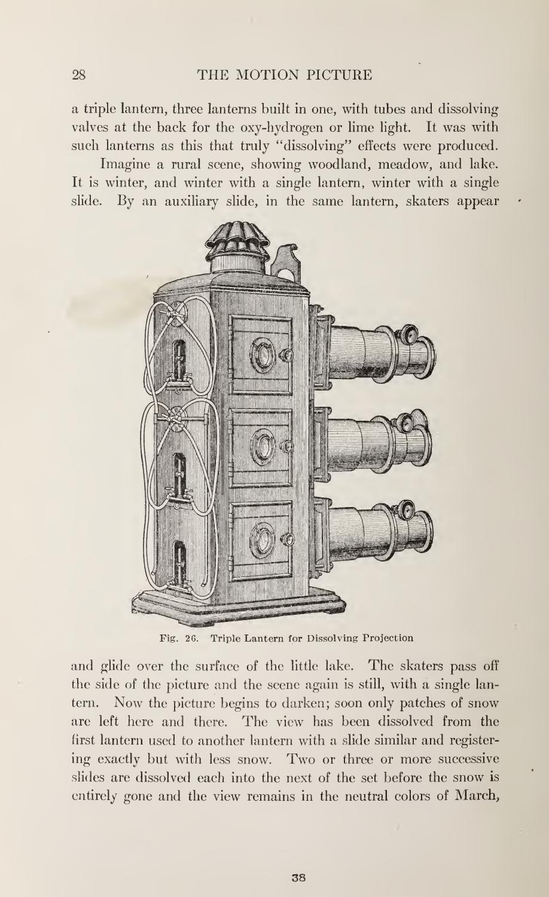
Triple lantern
Match the three lens barrels and their spacing.
American School / David S. Hulfish · US public domain · published 1911Source and files
Source record · Full scan of PDF page 42, rendered to JPEG. Source volume: Cyclopedia of Motion-Picture Work, vol. 1.
plate-42.jpg
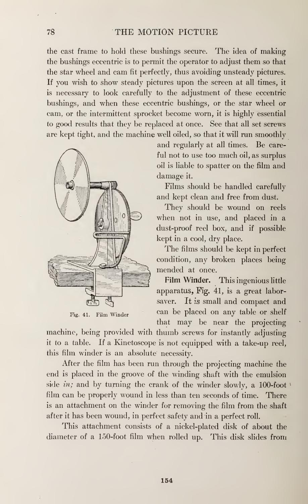
Film winder
Reference the crank and spool silhouettes.
American School / David S. Hulfish · US public domain · published 1911Source and files
Source record · Full scan of PDF page 172, rendered to JPEG. Source volume: Cyclopedia of Motion-Picture Work, vol. 1.
plate-172.jpg
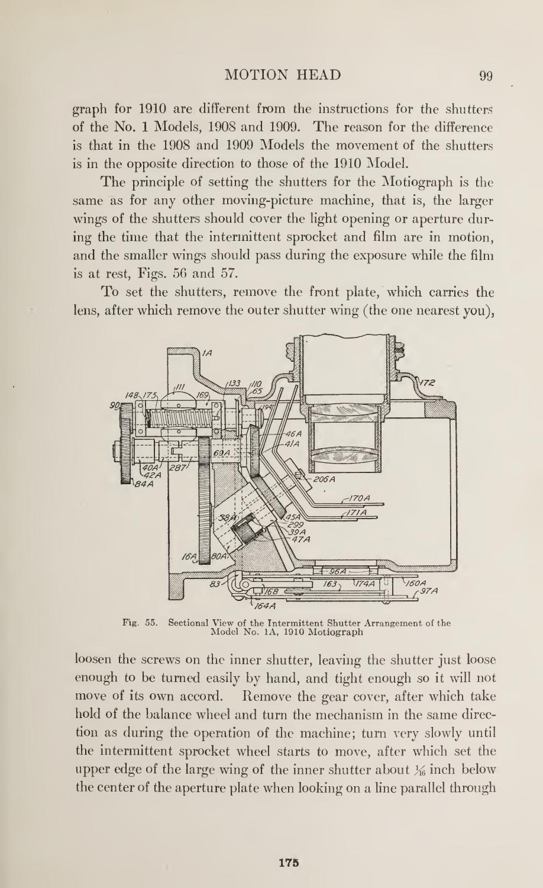
Sectional shutter
Study when the shutter blade eclipses the aperture.
American School / David S. Hulfish · US public domain · published 1911Source and files
Source record · Full scan of PDF page 197, rendered to JPEG. Source volume: Cyclopedia of Motion-Picture Work, vol. 1.
plate-197.jpg
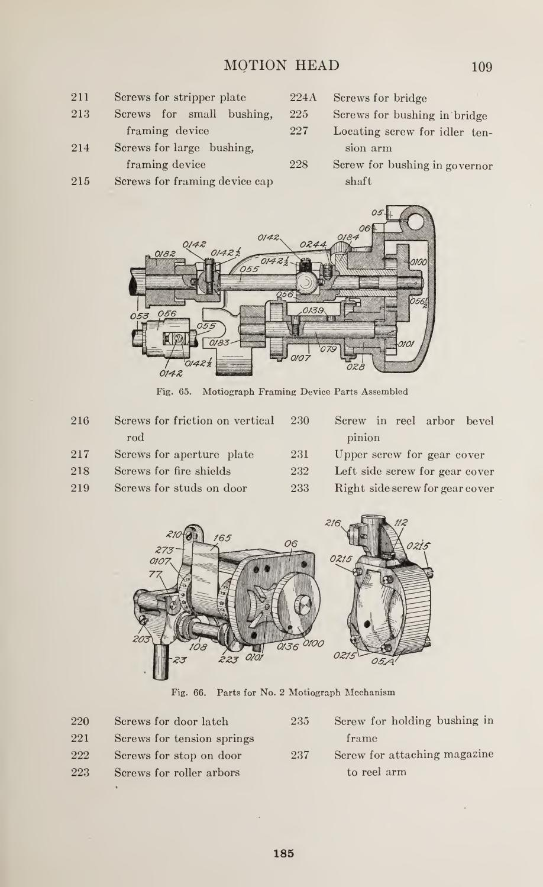
Motion head parts
Use the exploded parts as scale references.
American School / David S. Hulfish · US public domain · published 1911Source and files
Source record · Full scan of PDF page 207, rendered to JPEG. Source volume: Cyclopedia of Motion-Picture Work, vol. 1.
plate-207.jpg
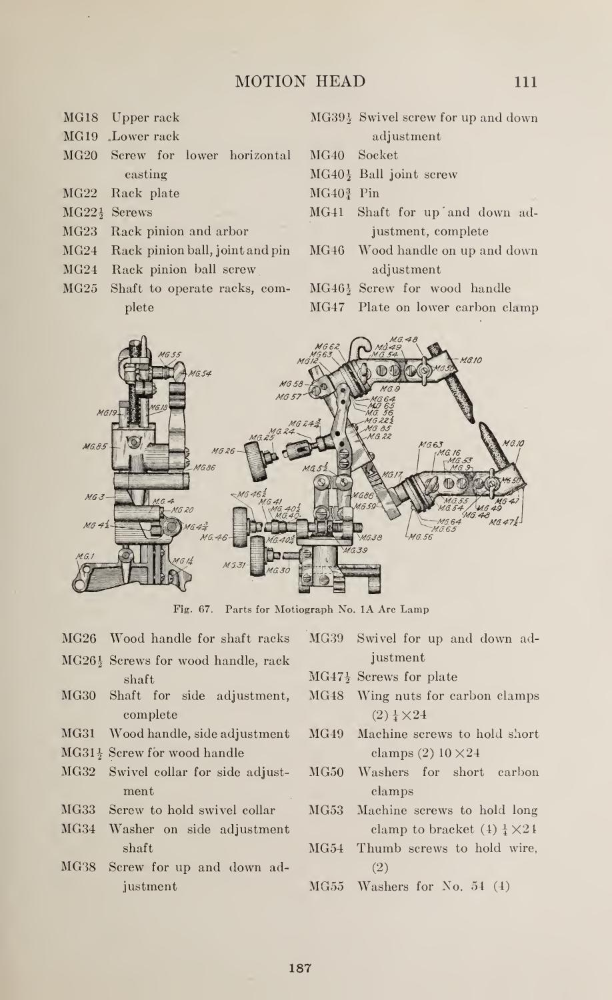
Arc lamp parts
Reference the lamp assembly and fasteners.
American School / David S. Hulfish · US public domain · published 1911Source and files
Source record · Full scan of PDF page 211, rendered to JPEG. Source volume: Cyclopedia of Motion-Picture Work, vol. 1.
plate-211.jpg
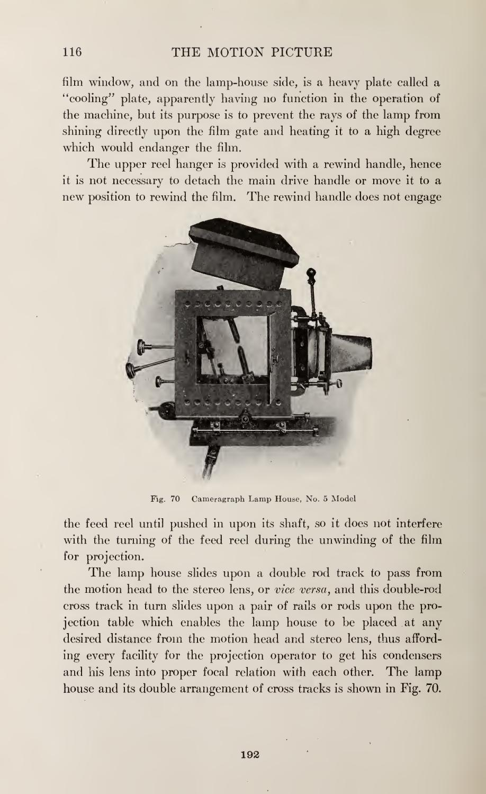
Lamp house
Shape the exterior ventilation slots and door.
American School / David S. Hulfish · US public domain · published 1911Source and files
Source record · Full scan of PDF page 216, rendered to JPEG. Source volume: Cyclopedia of Motion-Picture Work, vol. 1.
plate-216.jpg
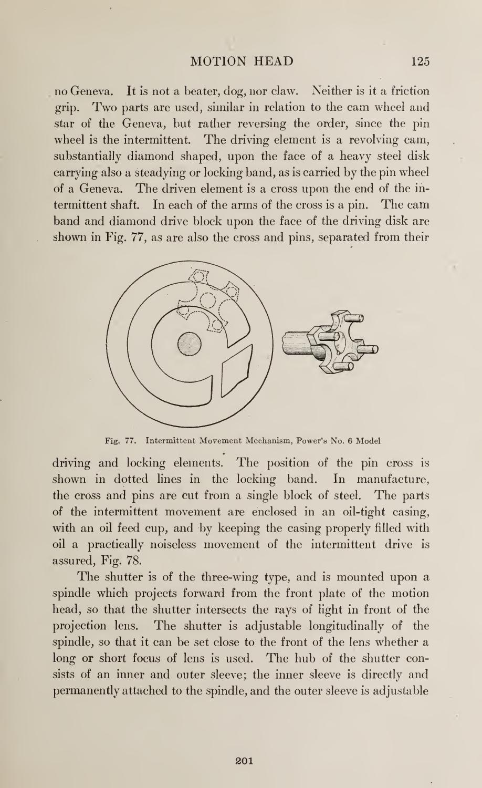
Intermittent movement
Reference the way a rotating drive advances a film strip in steps.
American School / David S. Hulfish · US public domain · published 1911Source and files
Source record · Full scan of PDF page 225, rendered to JPEG. Source volume: Cyclopedia of Motion-Picture Work, vol. 1.
plate-225.jpg
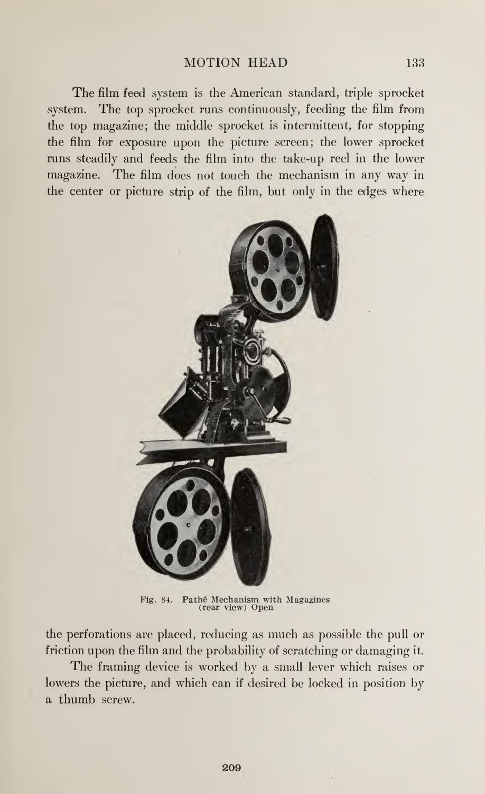
Pathé magazines
Study the proportions of feed and take-up magazines.
American School / David S. Hulfish · US public domain · published 1911Source and files
Source record · Full scan of PDF page 235, rendered to JPEG. Source volume: Cyclopedia of Motion-Picture Work, vol. 1.
plate-235.jpg
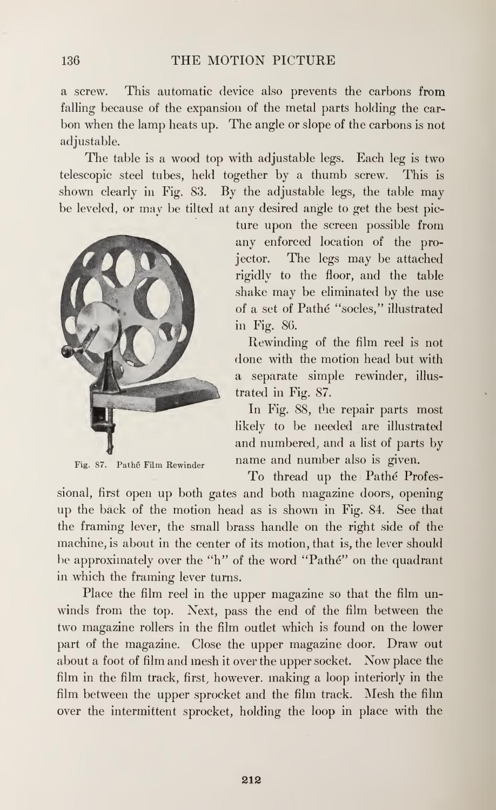
Film rewinder
Trace the threading path across the rewinder.
American School / David S. Hulfish · US public domain · published 1911Source and files
Source record · Full scan of PDF page 238, rendered to JPEG. Source volume: Cyclopedia of Motion-Picture Work, vol. 1.
plate-238.jpg
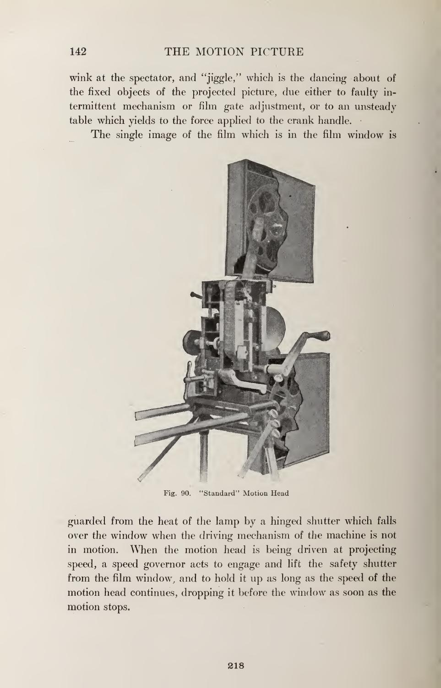
Standard motion head
Use the drive train as the silhouette in the blade wipe.
American School / David S. Hulfish · US public domain · published 1911Source and files
Source record · Full scan of PDF page 244, rendered to JPEG. Source volume: Cyclopedia of Motion-Picture Work, vol. 1.
plate-244.jpg